太多人喜欢谈道德和节操了，而且是要求别人，而不是只要求自己。//@老赵:好奇葩…… //@bnu_chenshuo: 啧啧称奇@w3cplus:今天与一位不认识的网友聊天（截取下图），最后让我感觉是不是我自己太拜金了，我的节操不够高，还是我对金钱的追求高于我对节操的追求。给我一点方向，让我更爱节操一点。你能做到吗？聊到后面，那兄台怒了。他怒了，我还想怒呢？ 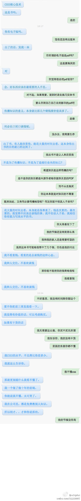
每天在微信发#十分钟早餐#，同事的疑问多是十分钟能做完早餐吗？如果算加工时间，十分钟通常不够，我会在前一天晚上准备好早餐原料，通过电蒸锅，电高压锅的预约功能，起床就有热食等着。馄饨面条等需要早上现煮，十分钟足够。 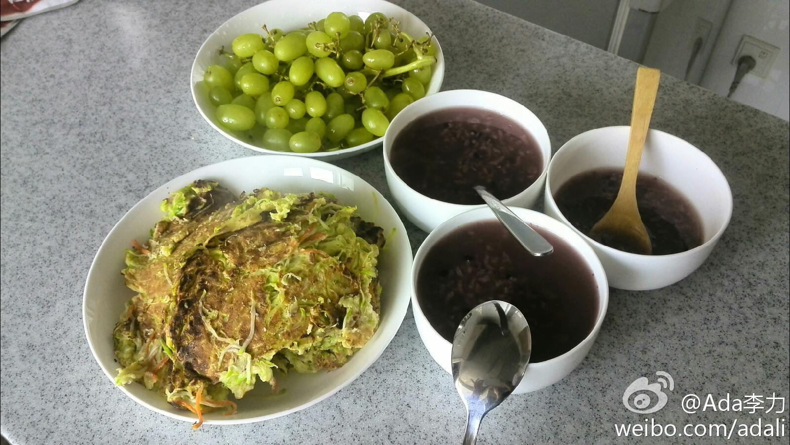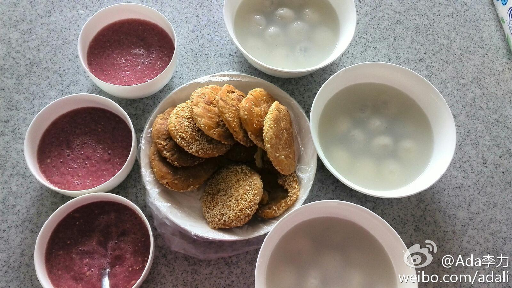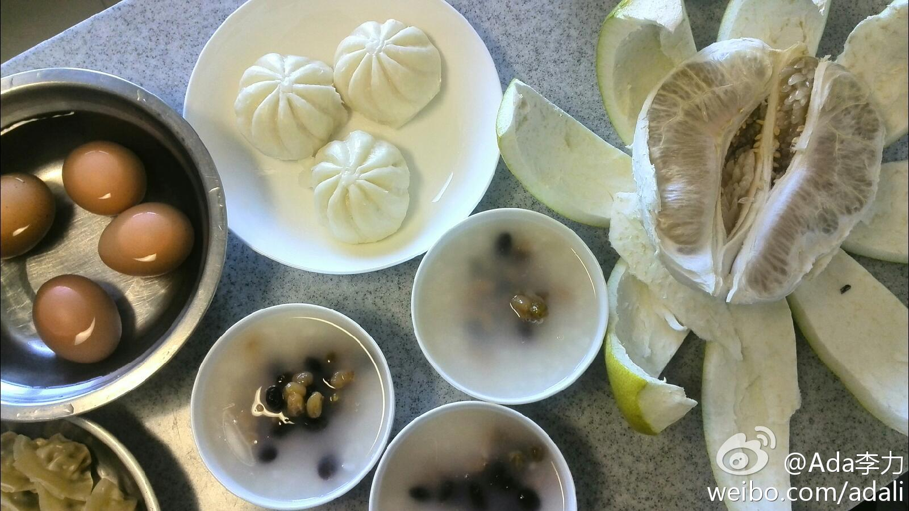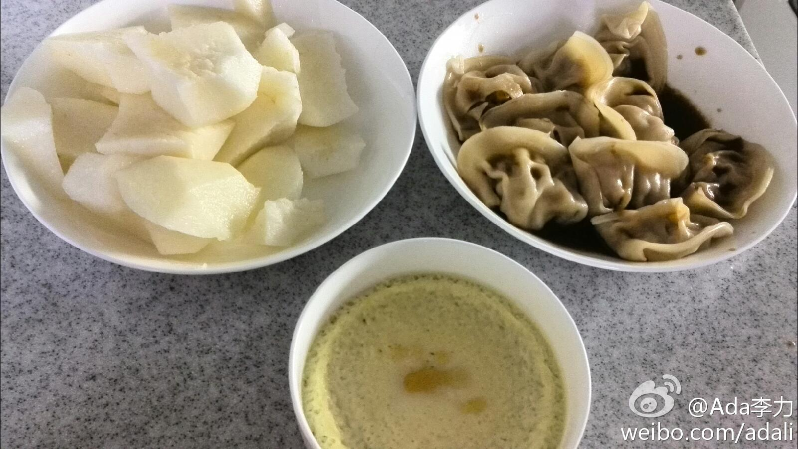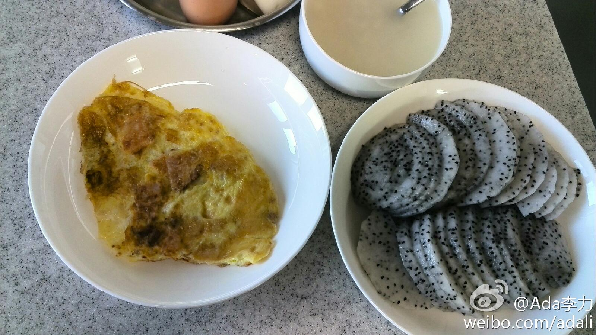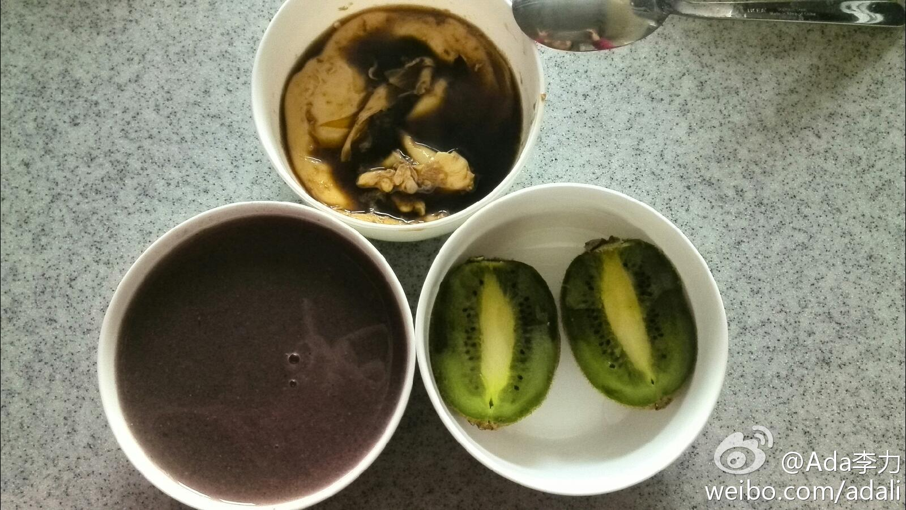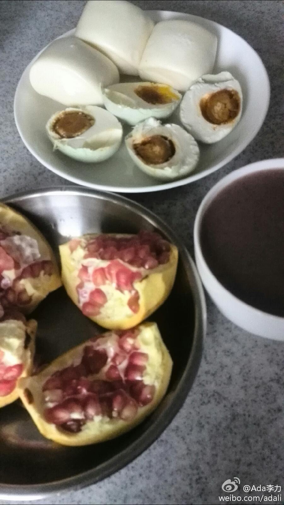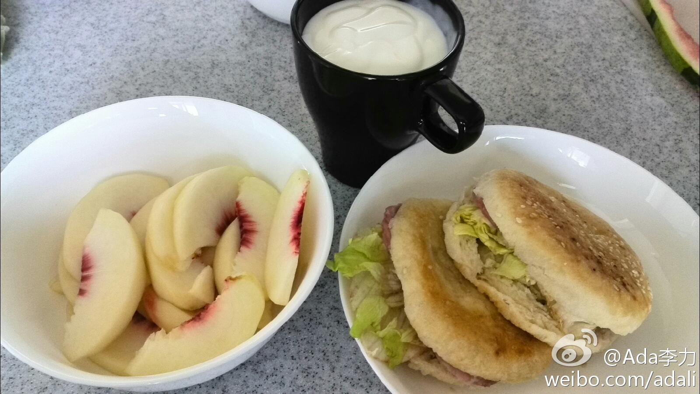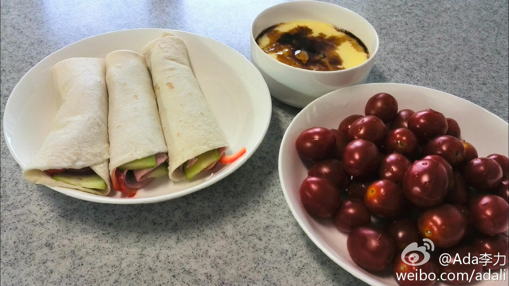
今天试用了下实体机器，这么一个介于电视屏幕和平板之间的产品，除了示例的应用，如多人玩游戏，还可以干什么呢？ 联想智能桌面开发大赛正在如火如荼的举行: 网页链接此次大赛主要针对联想最新重量级一体机产品Horizon 27，征集创意中 （分享自 @CSDN程序人生） 网页链接 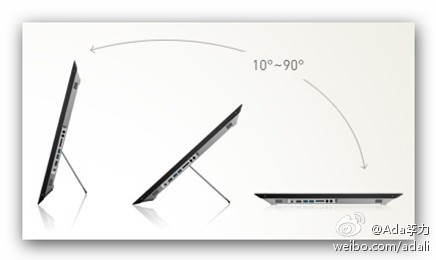
经常看到一些软件应用开发大赛，学生向来是参赛主力，但能出精品的还得是团队，这些团队基本是得奖专业户。今天看#联想智能桌面#应用开发大赛的几个参赛应用，先映入脑海的问题，这是不是创业团队所做的？要说，参加这类竞赛，倒是创业团队很好的练兵和宣传渠道，比参加创业聚会靠谱。
上个月去过。//@python培训_远程:回复@Ada李力:你已经去过？ //@Ada李力:今年也不收费 [呵呵] //@python培训_远程:周末好去处，石景山区板凳沟村南马场水库。推荐IT人士参考。 可以带小孩到山上呼吸一天的新鲜空气，去年免费，今年不知道收费不收费 @Ada李力@跟黄哥学编程:这里看红叶不堵车，不花钱，人也不多。 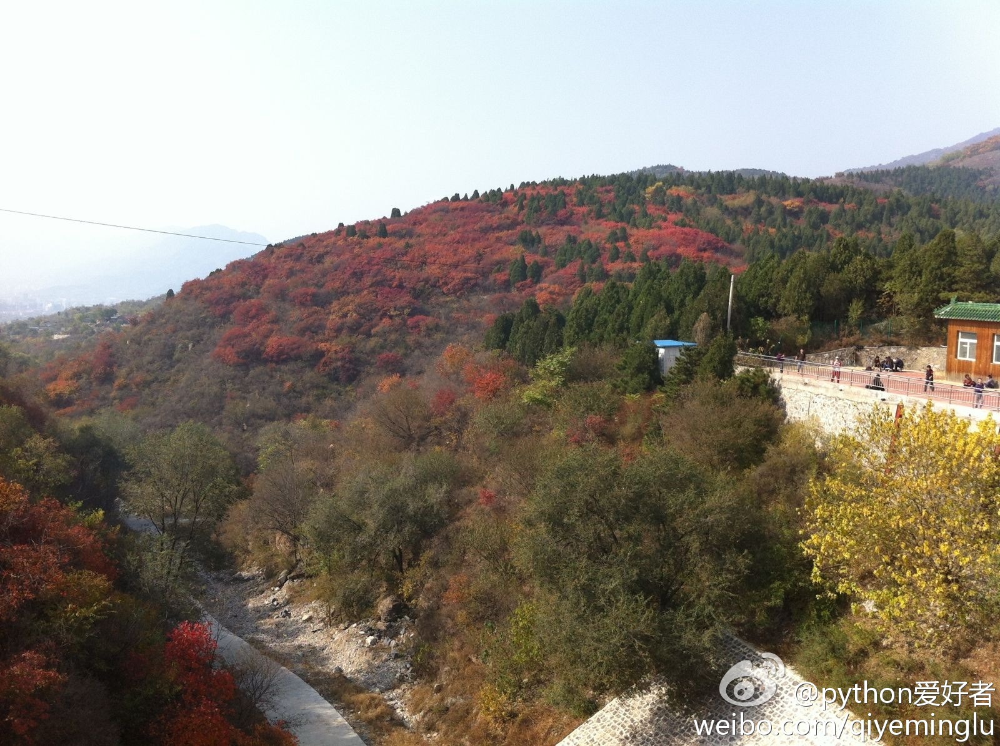
回复@罗大宁v:现在很少有单打独斗的机会，做事还是得团队。 //@罗大宁v:专业和不专业差距很大，光有一两个天才没用。一个好的美工，就能抵半个天才，一个坏的测试，能让天才变平庸。同样还遇到很多私人接活的，牛人出不来牛作品。@Ada李力:经常看到一些软件应用开发大赛，学生向来是参赛主力，但能出精品的还得是团队，这些团队基本是得奖专业户。今天看#联想智能桌面#应用开发大赛的几个参赛应用，先映入脑海的问题，这是不是创业团队所做的？要说，参加这类竞赛，倒是创业团队很好的练兵和宣传渠道，比参加创业聚会靠谱。
回复@Augur-O:帮你分享散播。[挖鼻屎] //@Augur-O:必须自己要自强，善用那种高傲，骄傲艺术家的眼光鄙视对方三秒，保证什么意见都没了，而且还特满意你的方案，多年血泪积攒的经验一口气借大姐平台全分享了。@Ada李力:相比较开发人员，我觉得设计人员更不好做，是个人都能吐槽设计稿，理由一个就行，不喜欢。- 今天否了一个banner图，换了设计师后，接受了第二稿，现在还是有些内疚呢。